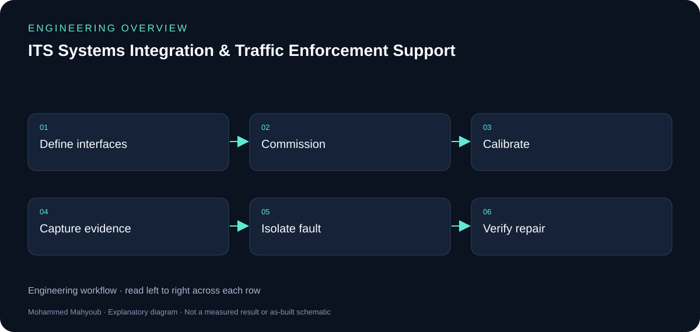
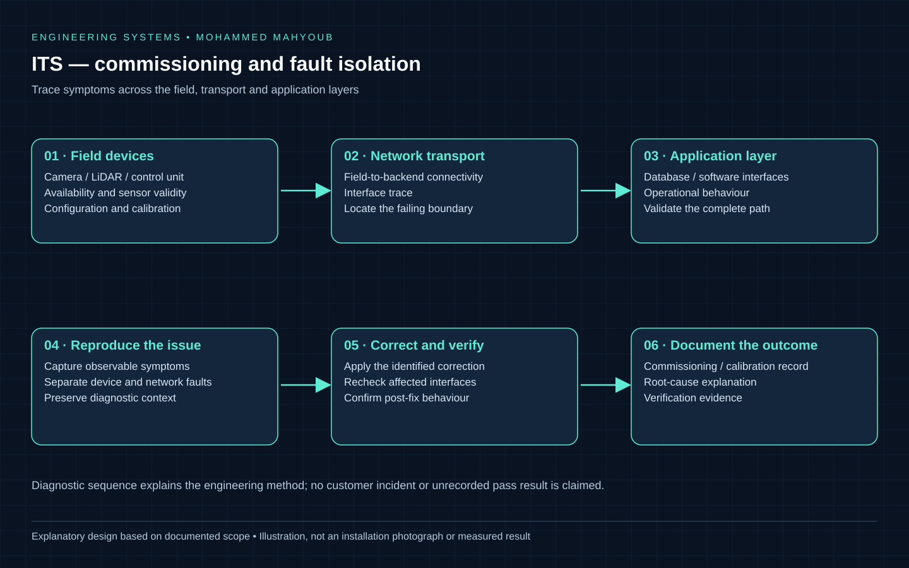

Professional Engineering · Smart Infrastructure
ITS Systems Integration & Traffic Enforcement Support
Supported the integration, commissioning, calibration, validation, troubleshooting, and operational performance of intelligent traffic enforcement systems across field and backend environments.
Professional Case Study — Details Anonymised
System overview

- Author
- Mohammed Mahyoub
- Scale
- 800+ intelligent transportation and traffic enforcement systems supported across the UAE.
- Role
- Field and systems engineering across cameras, LiDAR, sensors, control units, networking, databases, and software interfaces.
- Method
- Structured commissioning and root-cause analysis to resolve integration issues across hardware, networking and software.
Engineering rationale
Integration boundaries
Cameras, LiDAR and control units form one part of the system; network transport, databases and software interfaces form the next. A fault should be traced across those boundaries rather than attributed to the first device showing a symptom.
Commissioning and diagnosis
The documented work covers installation support, commissioning, calibration, validation and operational troubleshooting. Evidence should distinguish device health, transport availability and application behaviour. This public case study omits customer identities, site configurations and enforcement data.
What the scale means
The published 800+ figure describes systems supported across the UAE. It is not a claim that every system was independently designed or deployed by one engineer.

Evidence and validation
Review the documented implementation against these validation topics; measured results are shown only where provided by the source.
- Device availability and sensor validity
- Field-to-backend interface trace
- Calibration/commissioning record
- Fault reproduction and post-fix verification
Visual documentation
These repository diagrams explain the documented implementation and integration boundaries. They are explanatory documentation; physical-build photographs and raw operational results are not published here.

